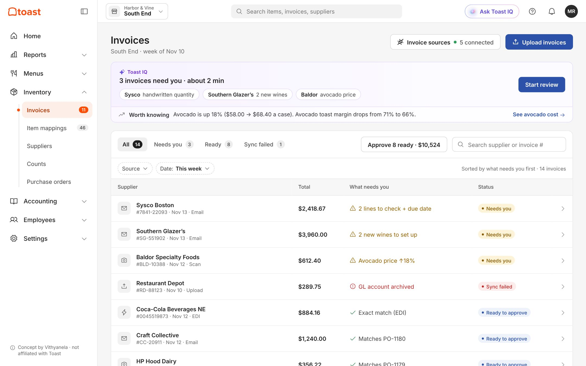
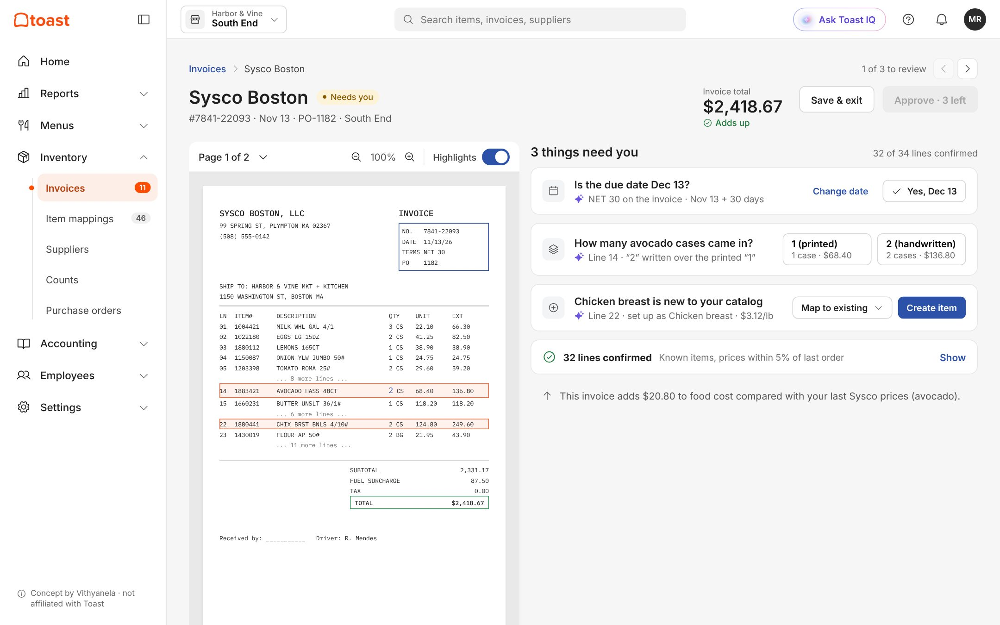
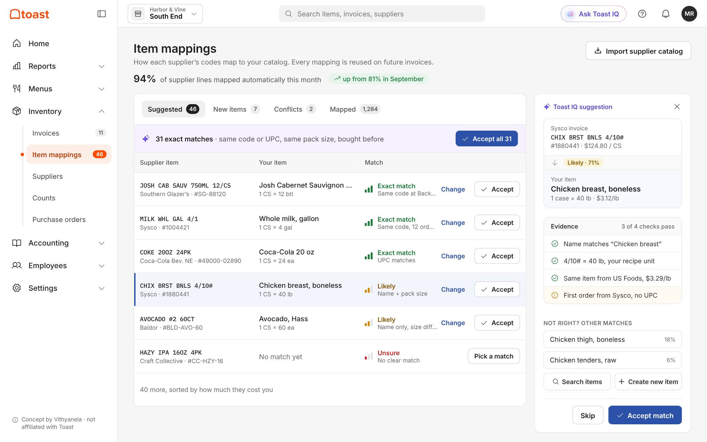
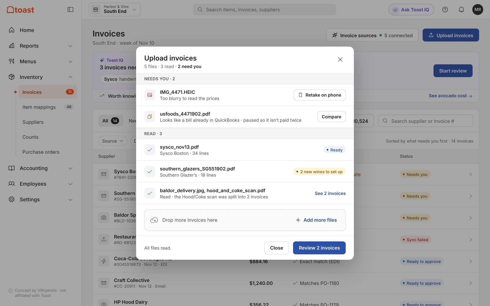
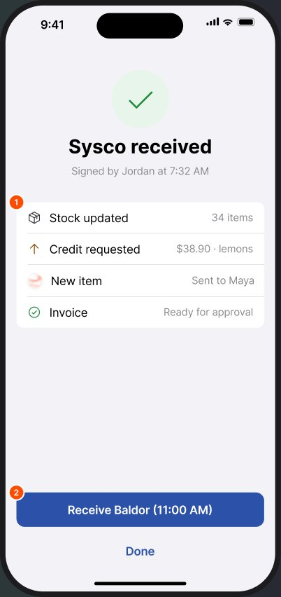

Invoices in.
Costs right. Books clean.
An AI-assisted flow for Toast Inventory that takes a supplier invoice from a crumpled paper at the back door to a correct bill in QuickBooks, and only asks a person about the lines that genuinely need one. This page is the trail behind the screens: the problem, the people, the journey, the decisions, and a working prototype with realistic data you can click through.
Invoices are still keyed in or re-checked by hand, so stock, costs and the books drift apart and margin losses show up weeks late.
Operators don’t need AI that’s “accurate”. They need to know which lines to trust, so they stop re-checking all of them.
Let Toast IQ read everything, show its confidence in plain words, and ask a person only about exceptions. People always approve.
Time from invoice received to bill in the books, and the share of lines that needed no human touch.
One problem, one journey, done properly.
Toast is building a unified inventory platform for restaurants and retail. Inventory is where a store’s money sits, and the invoice is where most of that money enters the system. I chose to go deep on that single journey instead of shallow across the whole platform.
The money moves on paper, and nobody checks it until month-end.
Every other part of a POS is real-time. Cost data still arrives as paper, PDFs and email, gets typed in late at night, and reaches the accounting system with errors nobody sees until the P&L.
Invoices a two-location GM handles in my scenario, from Sysco, US Foods, produce, beer and wine suppliers.
Weekly keying and re-checking at ~4 minutes an invoice, usually after close, when mistakes are most likely.
How long a quiet supplier price rise can go unnoticed before it shows up as a margin drop.
Scenario figures used to frame the design, not measured data. Validating them with operators is the first thing I’d do.
Every supplier names the same thing differently
“CHKN BRST BNLS 4/10#”, “Chicken Breast Boneless 40 lb” and a handwritten “chix brst” are the same item. Pack sizes change, brands get substituted, and each number has to land in three places: stock, recipe costs and the books.
If it looks equally sure about everything, people re-check everything
One misread “10#” or a $38.50 case read as $385.0 quietly inflates food cost. Without visible confidence and a fast way to correct, AI capture saves nobody any time.
Three people touch every invoice. They want different things from it.
Maya · General Manager
ApprovesOwns food cost“I just need to know the numbers are right without reading every line at 11 PM.”
Reviews and approves invoices after close. Cares about cost changes and margin.
Jordan · Receiver
Phone7 AM, driver waiting“Is it all here? He’s in a hurry.”
Checks deliveries at the back door, flags shorts, scans the invoice. Can’t approve bills.
Priya · Bookkeeper
QuickBooksMonth-end“Why is this bill posted twice, and where did the paper goods go?”
Needs Toast and QuickBooks to agree. Fixes sync and account issues, not invoice lines.
The same engine serves restaurants, retail and hybrid stores (a café that also sells packaged goods). The location switcher shows the type, because it changes which items and invoices you see.
A week of invoices, from the back door to the books.
| Stage | Today | Pain | With this design |
|---|---|---|---|
| Delivery Jordan · 7 AM | Counts cases, signs paper | Shorts get signed for | Scan on iPhone, tick lines, flag a short with a photo |
| Capture | Paper, email PDFs, EDI in three places | Lost or entered twice | One inbox, duplicate detection, “Toast IQ is reading” |
| Review Maya · after close | Keys or re-checks every line | ~3 hrs a week | Only flagged lines need her; the rest show their evidence |
| Fix exceptions | Matches names, converts packs by hand | Same fix every week | Map once, reused forever; pack size → $/lb for her |
| Approve | Approves, glances at food cost | Price rises seen weeks late | Price changes with their margin impact, before approval |
| Sync Priya | Exports, fixes mismatches | Silent failures | Held bills with a plain reason and a suggested fix |
Five rules that settled most arguments.
Ask only what needs a human
The screen leads with the question (“How many avocado cases came in?”), not the invoice code. Everything else is confirmed and one click away.
AI suggests, people approve
Toast IQ never approves, pays or posts. It explains why, shows what it checked, and says when it isn’t sure.
Confidence in words, not decimals
“Exact match · UPC matches” beats “98%”. Nobody can act on the difference between 97 and 99.
Every number traces back to the paper
Flagged lines highlight on the invoice image; the total check and line count sit next to the approve button.
One colour, one job
Orange is Toast and where you are. Blue is actions. A soft violet-to-pink gradient is only Toast IQ. Green, amber and red are only status. Tabs stay neutral. When a colour means one thing, people stop reading and start recognising.
Built around the invoice’s life, not around menus.
Every invoice is in exactly one state, and every screen answers “what needs me next?”. The list sorts by urgency; the tabs are the jobs people actually do.
Invoice lifecycle
Sync failed is the exception path: approved, but rejected by the accounting system. It surfaces second in the list and on Accounting sync, because it’s the bookkeeper’s to fix, not the GM’s.
Invoices · Item mappings
Plus Suppliers, Counts and Purchase orders (outside this prototype).
Accounting sync · GL mappings
Where costs post in QuickBooks, and what’s blocking tonight’s sync.
Ask Toast IQ
A docked panel that knows the location and week you’re looking at.
AI where it removes work. Honest where it’s unsure.
The JD asks to tell valuable AI from hype. My test: does it remove a step a person does today, and can they see why it’s right?
Reads, matches, suggests
- Reads invoice headers and line items, including handwriting
- Matches supplier codes to your items and converts pack sizes
- Suggests GL accounts from how your bookkeeper actually posts
- Answers “what’s left before tonight’s sync?” as a live checklist
Decides, pays, guesses silently
- Never approves, pays or posts a bill
- Never hides a low-confidence match behind a green tick
- Declines off-topic questions and points back to what it can do
- Asks a follow-up when a question is vague
Designing for when it’s unsure
Every suggestion opens an evidence card (“3 of 4 checks pass”, with the failing check called out as “worth a look”), alternatives, “Search items” and “Create new item”. 31 exact matches can be accepted in one click; the rest get a quick look.
Here’s the part you can click through.
Every screen below is live in the prototype with realistic suppliers, prices and pack sizes. Try it as the GM, the receiver or the bookkeeper from the ⓘ note in the menu.
Invoices inbox
Monday after close: what needs Maya, and nothing else first.

Review an invoice
Question first, evidence second, answer on the right.

Item mappings
Teach Toast once; every future invoice reuses it.

Accounting sync
Priya’s month-end, without the phone calls.

Ask Toast IQ
A finish-line checklist, not a chatbot.

Upload
Upload is a commodity. Reading is the moment that matters.

Receiving on iPhone
At the back door, with the driver waiting. Designed in Figma.
 Today’s deliveries
Today’s deliveries Scan · auto capture
Scan · auto capture Blurry → retake
Blurry → retake Check exceptions
Check exceptions
ReceivedPlus offline, camera access off, short delivery with credit request, and receiver-can’t-approve states in the Figma file.
The first answer was rarely the right one.
I critiqued every screen as the GM at 11 PM. A few of the calls that changed:
Accessible by default, consistent by rule.
0 automated issues
Audited with axe-core: contrast, names, keyboard access, focus, 24px targets, dialogs, live regions and reduced motion.
Components in Figma
Buttons, pills, nav, cards and the Toast IQ orb as variants, applied across desktop and iOS. In production I’d build on Toast’s own system.
Laptop first
Review cards restack at 1280px; below 1100px the decisions move above the invoice paper.
One number both the operator and Toast care about.
Time from invoice received to bill in the books
Captures capture speed, review effort and sync health in one measure the GM can feel.
- % of lines matched with no human touch
- Edits per invoice, and re-check rate of “exact” matches
- Undo rate after approval (trust guardrail)
- Sync failures per week and time to fix
- Business: add-on attach and retention for inventory users
Thought through, not yet built.
I love going deep on flows like these. Within the weekend I prioritised one journey end to end; these are the next ones I’d take on.
Test with operators
Five sessions with restaurant and retail managers and Toast support, using this prototype with their own invoice types.
Supplier setup & field mapping
Connect a distributor, preview incoming fields, match unknown codes with the same evidence panel.
Supplier record
Contacts, terms, delivery days, channel and price history, so price changes have context.
Moving customers to the new platform
What moves, what matched automatically, and a review queue using the same needs-you / ready pattern.
Bottle shops, grocery, convenience
UPC-first matching, case-to-each conversion, and high-SKU catalogs.
Item creation & catalog management
How the catalog is built in the first place, and kept clean across locations.
See it working.
Start with the inbox, review Sysco, map the chicken, fix the sync, and ask Toast IQ what’s left before tonight.